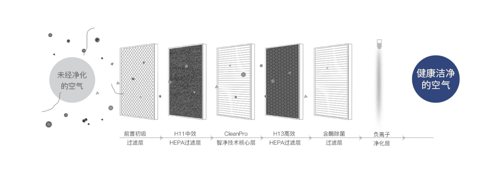

使用指南
净化效果很大程度上取决于风力大小，森晨空气净化器在日常使用时，建议用户选择自动模式使用，如环境污染源较多或新房除醛时，建议手动开启最大档位进行净化。
空气净化器是针对不同的空间容量设计的，使用功率与居室立体的体积要互相适应。就是说只能针对一定体积的空气进行净化，如果空间与外界通风，外界的更“脏”的空气进入房间，其实就是增加了需要净化的空气体积，必然导致净化速度和效果大打折扣，而且还浪费电，增加使用成本。
森晨空气净化器采用专用滤网，请通过官网、天猫、淘宝和京东旗舰店渠道购买，或咨询森晨专业客服。切勿在没有资质的第三方供应商处购买，以免影响您的使用和保修权利。
空气净化器都有较高的智能化，指示灯会实时显示各种信息，如什么时候有污染了、什么时候该更换滤网了、等等。特别要注意，如果长期不使用净化器时，一定要拔下插头，这是使用电器的原则之一，小心驶得万年船。
摆放位置直接关系到家用空气净化器的功能发挥。从原理上讲，空气净化器就好比是一个圆的圆心，半径范围内都是其影响范围，如果空气净化器附近是墙或是有其他的障碍物，都会弱化其净化效果。所以，在摆放空气净化时，要注意尽量远离墙壁，尽可能地放在空间的物理中心，不要正面面对大截面的障碍物。这样才能将净化效果做到更大化。
常见问题
1、WIFI隐藏导致机器接不到WIFI；
措施：必须保证路由器不能隐藏WIFI信号；且必须保片WIFI能正常上网；
2、没按操作指引进行启动WIFI；
措施：用户在连接WIFI是不按连接指导书操作，直接用手机与机器配对，不用路由器；或输配对密码时输错WIFI密码；
3、网络慢连接时间长；
措施：用户家里有可能网速较慢，导致连接倒计时结束，机器还没连接上WIFI；路由网速保证8M或以上。
4、使用了路由器的5G网络，改为2.4G网络即可连上。
措施：现市场上的路由器大部分都是双频的，一定要用2.4G的网频进行连接。
5、消费者处的WIFI没连上网络，导致APP注册时失败；
措施：在册APP帐号时必须保证，网络无异常，否则会注塑失败。
6、路由器连接仪器的数量被限制。
措施：配对失败时，可排查是否路由器限制导致连接不上；
排查方法：用一台手机开热点（安卓手机），另外一下手机连接该手机的热点，下载APP注册，按操作指导书要求操作配对；
若配对成功则需排查路由器是否有限制MAC地址；
7、其它常见现象：
（1）正在配对的过程中，机器的WIFI灯是闪烁的；配成成功后，WIFI灯处于恒亮的状态，此时如果手机绑定失败，则手机退出APP软件，然后重新进入；进行绑定即可；
（2）确保路由器手机都是正常的状态下进行配对，如果配对完是失败的，并且机器的WIFI灯灭，则根据提示要求，把机器的电源拔掉；30秒钟后再上电，按开关键开机，
待10秒左右机器上的WIFI灯会自动闪，并且变成恒亮；此时手机退出软件，重新进入，则看到有一台机器处理待绑定状态，绑定即可；
（3）在同一局域网里只要有一台手机与净化器配对成功，其它手机只需下载APP软件，连接此局域网，打开APP即可操控此台净化器，不用重新配对；
8、原理现象：
（1）机器的WIFI灯闪，代表机器在寻找网络配对；
WIFI常见问题：
1、WIFI隐藏导致机器接不到WIFI；
措施：必须保证路由器不能隐藏WIFI信号；且必须保片WIFI能正常上网；
2、没按操作指引进行启动WIFI；
措施：用户在连接WIFI是不按连接指导书操作，直接用手机与机器配对，不用路由器；或输配对密码时输错WIFI密码；
3、网络慢连接时间长；
措施：用户家里有可能网速较慢，导致连接倒计时结束，机器还没连接上WIFI；路由网速保证8M或以上。
4、使用了路由器的5G网络，改为2.4G网络即可连上。
措施：现市场上的路由器大部分都是双频的，一定要用2.4G的网频进行连接。
5、消费者处的WIFI没连上网络，导致APP注册时失败；
措施：在册APP帐号时必须保证，网络无异常，否则会注塑失败。
6、路由器连接仪器的数量被限制。
措施：配对失败时，可排查是否路由器限制导致连接不上；
排查方法：用一台手机开热点（安卓手机），另外一下手机连接该手机的热点，下载APP注册，按操作指导书要求操作配对；
若配对成功则需排查路由器是否有限制MAC地址；
7、其它常见现象：
（1）正在配对的过程中，机器的WIFI灯是闪烁的；配成成功后，WIFI灯处于恒亮的状态，此时如果手机绑定失败，则手机退出APP软件，然后重新进入；进行绑定即可；
（2）确保路由器手机都是正常的状态下进行配对，如果配对完是失败的，并且机器的WIFI灯灭，则根据提示要求，把机器的电源拔掉；30秒钟后再上电，按开关键开机，
待10秒左右机器上的WIFI灯会自动闪，并且变成恒亮；此时手机退出软件，重新进入，则看到有一台机器处理待绑定状态，绑定即可；
（3）在同一局域网里只要有一台手机与净化器配对成功，其它手机只需下载APP软件，连接此局域网，打开APP即可操控此台净化器，不用重新配对；
8、原理现象：
（1）机器的WIFI灯闪，代表机器在寻找网络配对；
（2）机器WIFI灯灭，代表机器没启动WIFI功能；
（3）机器WIFI灯恒亮，代表机器与路由器已正常连接，手机进软件绑定则可控制。
按照新国标的计算方式，森晨空气净化器MCW1适用面积为38-66㎡，MC21适用面积为56-96㎡，适合大小户型使用，空气净化器的适用面积页同时受使用房间的类型、高度、室内外污染物等因素影响哦。
森晨空气净化器均带有滤网更换自动提醒功能。实际更换时间将根据使用环境和使用方式不同而有所差异。
森晨空气净化器采用的是德国技术加厚优质滤网，滤网容尘量大，使用寿命更长。一般情况下，滤网的更换周期为6-12月。实际周期根据使用环境和方式的不同而会有所变化。
森晨空气净化器的额定功率达到新国标标准，净化能效均为高效级（能效等级越高，代表净化器越节能省电）。在实际使用中，森晨净化器可以根据当前室内污程度智能调整风速大小，使用更加智能省心。
1.检查电原插头是否有电
2.检查电源线与净化器连接是否接触到位
3.确认面板是否有盖好并盖到位
4.确认机器摆放是否正确(不能侧倒)
1.检查净化器工作档位是否正确
2.检查进风口上否有异物堵住
3.检查净化器滤网是否拆了胶袋
1.空气净化器0-50数值显示蓝灯，51-100数值显示绿灯，101-150数值显示黄灯，151数值以上显示红灯
2.数值降不下来时，注意关闭门窗
3.清洁传感器，注意避免传感器位置不要受到风源，热源，或阳光的照射，连续开机2至3个小时，数值就会下降
S40：开机状态下，长按“自动+定时”健3秒，进行滤网复位
S46：开机状态下，长按“风速+自动”3秒，进行滤网复位。听到提示音的同时，风速和自动停止闪烁，表示滤网更换时间重置
S60：开机状态下，长按“风速+自动”3秒，进行滤网复位。听到提示音的同时，风速和自动停止闪烁，表示滤网更换时间重置
S80：当滤网工作累计到一定时间后，滤网指示灯会闪烁提示更换滤网，开机状态下，长按”风速+自动”健3秒，进行滤网复位
目前健康家电行业品牌繁多，但并不是每个品牌都是专业做健康电器的。森晨作为行业专业的健康电器品牌，在空气净化领域具有较大的专业优势，机器配置多重进口传感器，不仅能实时监测室内空气质量，并且获得国家相关实用新型专利，实时显示PM2.5、和温湿度等空气质量数值，真正做到净化效果一目了然。
1.检查路由器是否能正常上网并保证路由网速达到8M以上，并确保没有隐藏WIFI信号
2.确保路由器使用的是2.4G网络，不能使用5G网络
3.扫描二维码下载森晨智能APP，注意正确注册帐号密码，确保密码无误。建议设置简单8位数密码。并确保注册时要联上WIEI进行操作，确保网络正常。确保路由器无连接数量限制
4.下载后，再按照操作指南进行配对，正常配对一至两次就都能连接的上
（1）正在配对的过程中，机器的WIFI灯是闪烁的；配对成功后，WIFI灯处于恒亮的状态，此时如果手机绑定失败，则手机退出APP软件，然后重新进入；进行绑定即可；
（2）确保路由器手机都是正常的状态下进行配对，如果配对完是失败的，并且机器的WIFI灯灭，则根据提示要求，把机器的电源拔掉；30秒钟后再上电，按开关键开机，待10秒左右机器上的WIFI灯会自动闪，并且变成恒亮；此时手机退出软件，重新进入，则看到有一台机器处理待绑定状态，绑定即可；
（3）在同一局域网里只要有一台手机与净化器配对成功，其它手机只需下载APP软件，连接此局域网，打开APP即可操控此台净化器，不用重新配对；
5.原理现象：
（1）机器的WIFI灯闪，代表机器在寻找网络配对；
（2）机器WIFI灯灭，代表机器没启动WIFI功能；
（3）机器WIFI灯恒亮，代表机器与路由器已正常连接，手机进软件绑定则可控制。
关于滤网

源自德国斯图加特，在智能4.0过滤系统的基础上优化升级，采用高品质纳米凝胶Nano-Gel与石墨烯为核心材料，通过多层渐进式复合技术架构设计，大幅提升峰折数、增加峰折挺度、降低迎风阻力，完美实现复合过滤工艺的突破性提升。CleanPro智净技术集除霾、除醛、杀菌等智能净化功能于一体，对小至0.1微米的空气污染物净化率高达99%，完美应对各种复杂空气环境，让甲醛、悬浮颗粒、过敏源、细菌等空气污染物无处藏身，为空气安全与身心健康保驾护航。
【HEPA滤层】森晨空气净化器内置的HEPA滤层，不仅能够过滤0.001微米的颗粒物，经过特殊工艺处理的滤网材质，在去除细微颗粒物的同时还能分解甲醛。
【纳米凝胶材料】森晨CleanPro智净技术核心材料之一纳米凝胶（Nano-Gel），采用国内领先技术，不仅除醛效率高、累积吸附量大、使用寿命长，而且由于其组分和天然矿物质类似，本身并不会滋生细菌，也不会像活性炭一样产生酸味。
【活化硅除醛微粒】森晨CleanPro智净技术核心材料之一活化硅除醛微粒，采用特殊工艺技术制作而成的新型纳米技术产品，产品安全环保，无任何污染，经SGS权威检测认证，测试结果符合欧盟RoHS指令要求。该产品能够使空气中的甲醛分子快速被吸附到多孔材料的内外表面，然后于常温下在催化剂的作用下被分解成无毒无害的物质。
【石墨烯复合材料】森晨CleanPro智净技术核心材料之一石墨烯除甲醛复合材料，超大的比表面积使得石墨烯拥有极强的吸附能力，能吸附大量的甲醛，并通过石墨烯表面的除甲醛分子，分解成无毒无不挥发物及水分子，甲醛去除率达到90%以上。
【HEPA滤网CCM】森晨空气净化器HEPA滤网采用韩国进口熔喷，相比国产熔喷拥有更长的容尘量，可以显著增加滤网的累积净化量25%~75%不等，有效延长了滤芯的使用寿命，减少了滤芯更换成本。
【优质HEPA滤网粘合剂】森晨空气净化器滤网采用的是成本更高的PO（聚烯烃）热熔胶，相比市场上传统的EVA（乙烯-醋酸乙烯共聚物）树脂热熔胶，不含TVOC有害物质的释放，滤网更加安全无污染。
【含酶除菌过滤网】森晨空气净化器滤网纤维上含有天然溶解酶，使捕获到的微生物无法繁殖，从而防止二次污染。由于使用的是天然酶，具有良好的安全性，不会存在溶菌作用后的酶消耗问题，具有半永久性的杀菌效果。
使用寿命长：森晨空气净化器滤纸，熔喷材料采用进口的PP聚丙烯母粒制造而成，CCM（使用寿命）要比同类产品高出20%。
净化效率高：PET支撑材采用德国进口的短纤制造，在净化器开启的时候支撑熔喷高效的处理PM2.5，提高净化器的颗粒物CADR值10%以上。
高效通风率：采用国内最顶尖的复合设备，滤纸在复合的加工过程中达到极限最低1克热熔胶，确保的滤纸最低的胶量，最大程度的保障了滤纸的通气量以及粘合度，为行业首创。